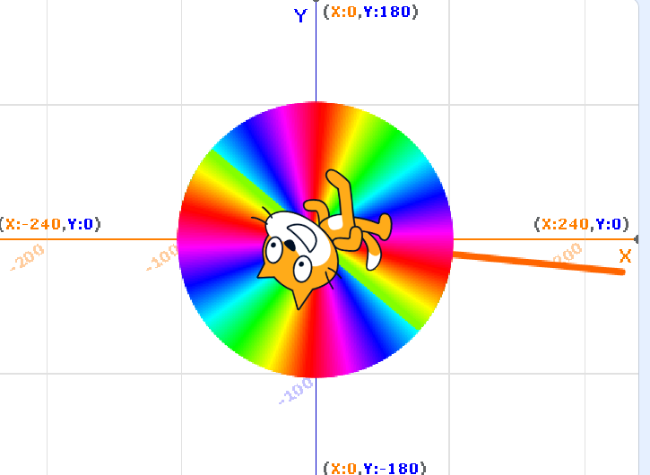
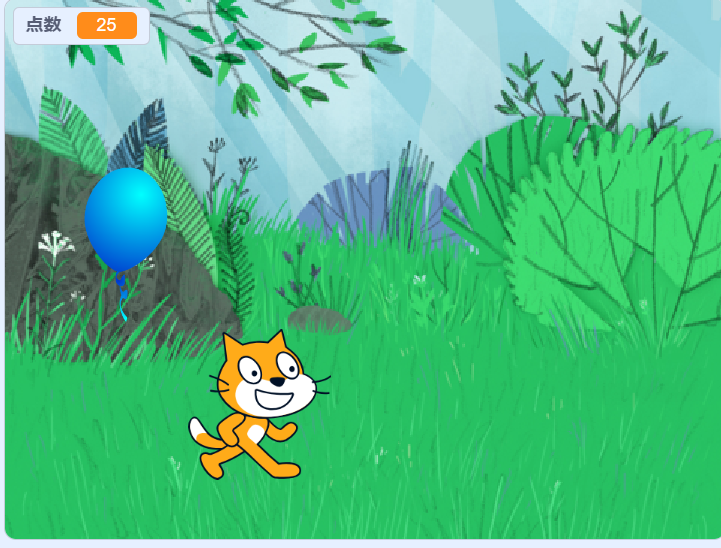

1週目のレポート ： 公大高専１年実習I-1
1－b班39番 yumyum
第1週目
1-1 サイエンスアート

1.内容
スクラッチを使って線を書くプログラムを作成した．書くたびに線の色と太さが変わり綺麗な色合いになるように工夫した
2.感想
数値を変えるだけでもいろいろな動きを猫にさせることができたが新しいブロックを使用することでもっとたくさんの種類の行動をさせることができた． 何回も繰り返していると画面に焼き付いて色が変わらないことがあった．
1-2 ゲーム

1.内容
上からバルーンが落ちてきて，猫を動かすことでバルーンをキャッチし点数を稼ぐというゲームを作成した．
2.感想
バルーンが一度消えてもまた現れるようにするのに少してこずった．端に当たると点数を引くようにしたため簡単に点数が上がらないようにした． 猫が右に向くようにしたり左に向くようにしたりすることは角度を考えなければいけないため少し時間がかかった．
1-3 ホームページ作成
私のホームページ
1.内容
githubを使用して自分のホームページを作成した．index.htmlやrep01.htmlなどのファイルを編集し自分のホームページを更新した．
2.感想
サイトの表記がすべて英語だったため解読に時間がかかった．普段ホームページがどんな仕組みなのかと考えることがなかったので新鮮だった． 今回は２つのファイルしか編集していないがほかのファイルがどんな役割なのか，どんな構造になっているのかを次回以降に知ることができればいいなと思った．